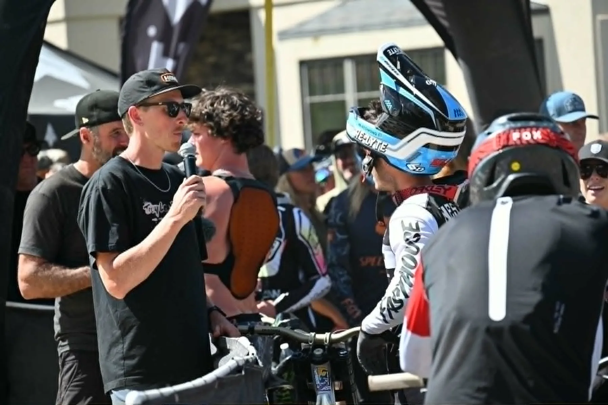

Multi-Camera Live Streaming
Professional cameras, live switching, recording, monitoring, and delivery to the platforms or destinations your event requires.
Explore live broadcast productionDenver live stream & broadcast production
Down The Wire Productions provides live streaming and event broadcast production for sports, races, corporate events, festivals, outdoor events, and brand activations throughout Denver, the Front Range, and Colorado.

Denver event video production
Reliable live production means planning the camera coverage, switching, program audio, graphics, replay, commentary, connectivity, recording, crew, platform delivery, and failure paths together. DTW can build the complete show or solve specific technical gaps inside an existing production.
Professional cameras, live switching, recording, monitoring, and delivery to the platforms or destinations your event requires.
Explore live broadcast productionReplay, score and timing integration, sponsor graphics, commentary, venue screens, and show storytelling for sports and competition formats.
Explore sports productionTechnical direction, camera operators, audio, utilities, engineering, fiber, networking, comms, power planning, and temporary venue systems.
Explore field infrastructureDenver, Front Range & Colorado
Down The Wire is built for productions that do not always happen inside a controlled studio. We support conventional venues as well as race courses, mountain locations, motorsports facilities, outdoor events, and temporary sites where signal transport, weather, distance, network availability, and crew logistics shape the broadcast plan.
Long signal paths, terrain, weather, remote camera positions, connectivity, venue screens, and temporary infrastructure.
Outdoor broadcast productionFast-moving coverage plans for tracks, drift events, races, sponsor integrations, replay, commentary, and live results.
Motorsports broadcast productionCamera, switching, monitoring, networking, transmission, lighting, and engineered show-package rentals for Colorado productions.
Browse broadcast rentalsPlanning a reliable stream
A strong speed test does not guarantee a stable event-day stream. Upload headroom, packet loss, jitter, crowd congestion, routing, backup paths, and whether the connection is shared all matter. Read our guide to how much internet speed a live event actually needs, then use the DTW Broadcast Planning Checklist to scope the rest of the show.
Start a Denver production
Share the venue, audience, platforms, production goals, and what you already have. We can help shape the camera, crew, replay, graphics, audio, connectivity, and delivery plan around the event.